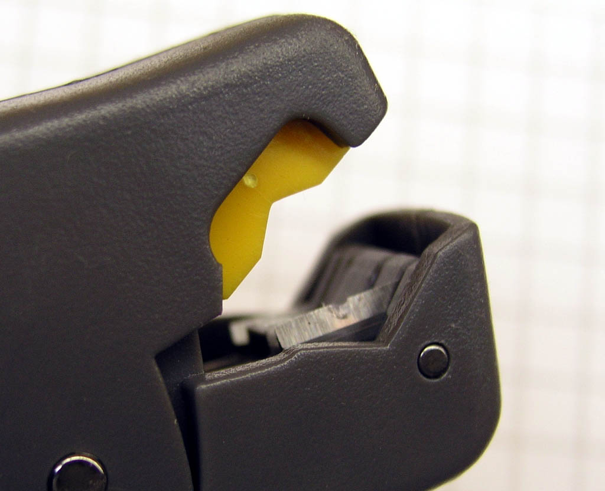

AeroElectric Connection
|
Bob's Shop Notes: |
|
Bob's Shop Notes: |
| Click Here for Larger Image
|
Preparing the end of a coax feedline for connector installation with
ordinary hand tools takes a fair amount of skill and care. Various layers of
insulation and outer braid must be cleanly cut away at locations appropriate
to he connector being installed. For the first several decades of the history
of BNC connector installation, the technician used a sharp knife, a deft touch
and some degree of skill and practice for "eye-balling" the right dimensions.
Like all hand-operations, the risk for having to start over due to lack of
diligence was moderately high. A number of clever tool manufactures now offer devices fitted with multiple blades, each one spaced appropriately for strip lengths and set for proper depth of cut. One such tool is illustrated here: I purchased this off Ebay for about $10. |
| This is an extra-ordinarily versatile tool. Many offerings are fitted with fixed blades. If one or more blades is not producing the proper depth of cut, there's nothing you can do about it. The tool is closely matched to the style of coax. This tool has adjusting screws and comes with a matching hex-wrench for adjusting depth of cut for each blade. | Click Here for Larger Image
|
| Click Here for Larger Image  |
Here we see one of the blades. This has the deepest cut and has a notch in it to clear the coax cable's center conductor. |
| The tool is correctly positioned for use when the end of the coax is just flush with the outside surface of the tool. | Click Here for Larger Image
|
| Click Here for Larger Image
| After the tool is positioned, one simply
rotates it about the coax several times. This tool has a finger hole in the
far end of the handle. You insert a finger and twirl the tool around the
end of the coax about 6 times. You can feel and hear when all cutting action
ceases. The end result provides three cuts into the coax at various positions and depths. |
| Use a pair of flush cutters or "dikes" to pull cut segments of coax off the end. This leaves you with a coax fully prepared to accept the connector. | Click Here for Larger Image
|
| Click Here for Larger Image
|
Slide the outer jacket clamping sleeve over the end of the coax and crimp the center pin. |
| Connector body goes on next. Push the coax in firmly until the center pin "clicks" into place. The tip of the pin should be just flush with the end of the connector. | Click Here for Larger Image
|
| Click Here for Larger Image
|
Slide the sleeve down until it's firmly seated against the back
of the connector and crimp the sleeve with the appropriate die of the
coax connector installation tool.
|
I did an Ebay search on "coax strippers" and found a dozen varieties of tools and suppliers. Perhaps 1/3 of the offerings included the adjustment feature.
{kind=link}
{kind=link}
{kind=link}
{kind=link}
{kind=link}
{kind=link}
{kind=link}
{kind=link}
{kind=link}